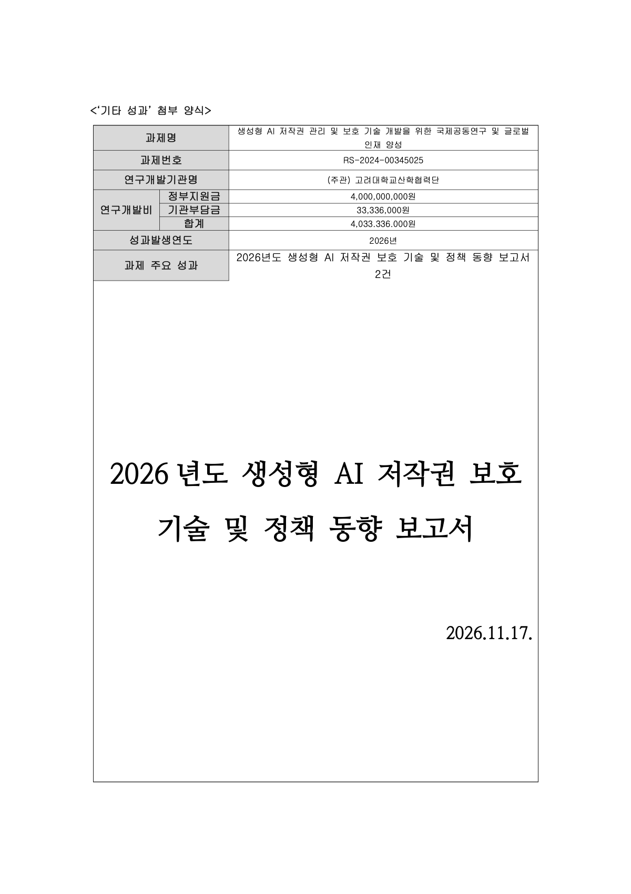

2026 REPORT 기술 및 정책 동향
생성형 AI
저작권 보호
기술 및 정책 동향 보고서
멀티모달 워터마킹부터 AI 폐기 학습, 영상정합,
3D 콘텐츠 보호까지. 생성형 AI 저작권 보호의
기술과 정책 동향을 살펴봅니다.
PDF 문서 57페이지 5.7 MB

- 보고서 일자
- 연구 수행
- 고려대학교산학협력단
- 주요 연구 분야
- 멀티모달 워터마킹 · AI 폐기 학습
영상정합 · 3D 콘텐츠 보호
FULL REPORT
보고서 원문
미리보기가 표시되지 않으면 ‘새 탭에서 열기’ 또는 ‘PDF 다운로드’를 이용해 주세요.
PDF2026_genai_copyright.pdf57페이지